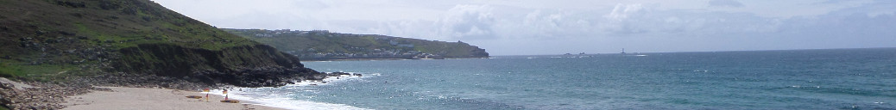
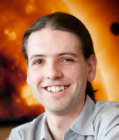

About
Everything you wanted to know and more


Hi! I’m Scott.
After a thrilling couple of decades in New Zealand where I learned to walk, talk, and pass myself off as a scientist, I headed overseas to continue my studies in astrophysics. Having spent some time working in Australia and Switzerland, I studied for a PhD at the Institute of Astronomy, Cambridge. I now work as a data scientist at an educational technology company.
Past work
During my PhD I worked with Nikku Madhusudhan on the structure and evolution of terrestrial (Earth-like) planets in other solar systems.
Before I came to Cambridge, I studied at the University of Canterbury in Christchurch, New Zealand for a BSc in biochemistry, mathematics and astronomy, followed by an honours degree in astronomy. During this time, I worked on a number of projects at the university, including medical image processing for a new CT scanner at HitlabNZ, gamma ray signals from the Fermi space telescope, and reduction software for the HERCULES spectrograph at Mount John University Observatory.
I was fortunate enough to spend time each year travelling the world and working with some great people thanks to various summer research internships. I have worked in Wellington (at Callaghan Innovation, developing microfluidic mixers); Australia (at the Australian Astronomical Observatory in Sydney and the International Centre for Radio Astronomy Research in Perth); and at CERN in Geneva in the CMS group. You are welcome to visit my LinkedIn profile for a summary of my work history.
Other info
My studies were supported by the Rutherford Foundation at the Royal Society of New Zealand. I love science outreach and public communication, swing dancing, travel, music, cycling, and baking things (especially cookies).